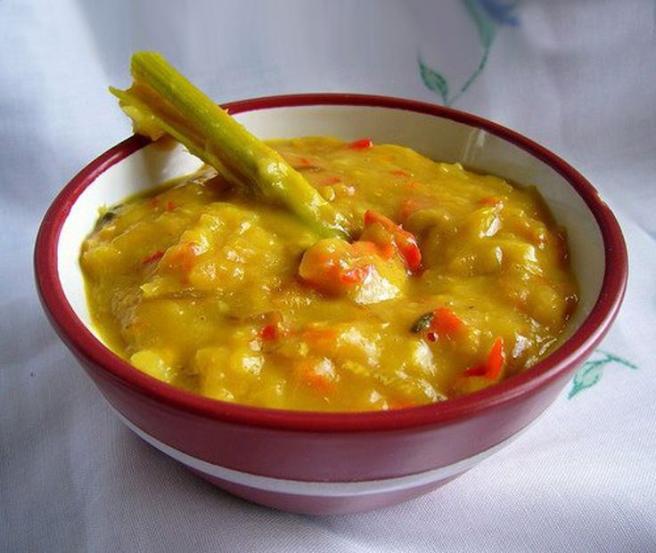
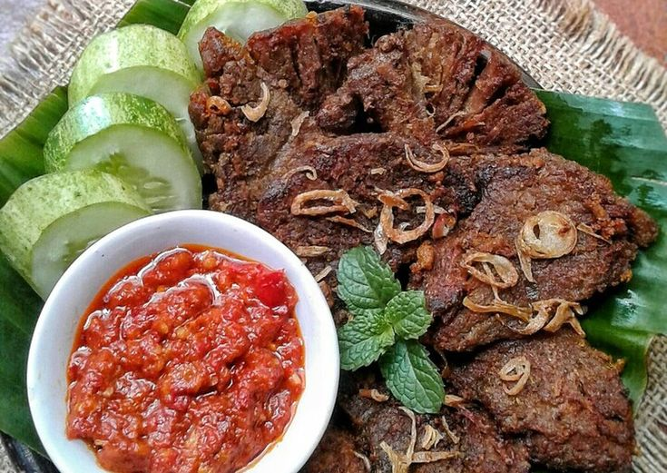
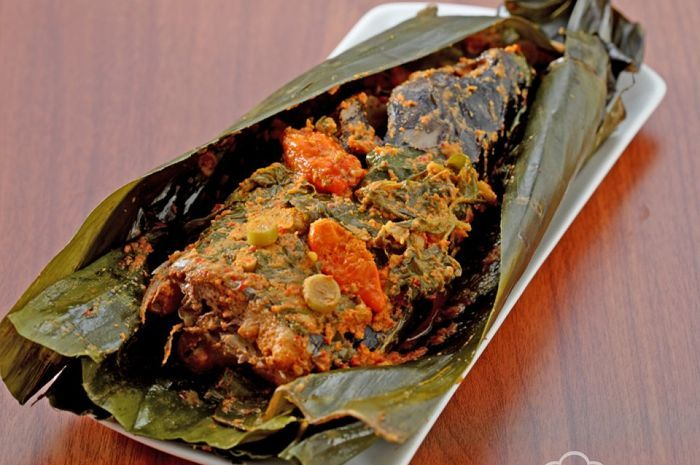

Tempoyak

Tempoyak adalah jenis makanan khas etnis Melayu di pulau Sumatra dan Kalimantan. Makanan ini terbuat dari durian yang sudah melalui proses fermentasi.
Pempek
Pempek (atau disebut juga empek-empek) merupakan hidangan bercita rasa ikan yang disajikan dengan kuah berwarna hitam khas Palembang bernama cuko. Makanan yang sudah ada sejak zaman kerajaan ini memiliki beberapa variasi, seperti pempek kapal selam, lenjer, lenggang, dan lain sebagainya.
Nasi uduk

Nasi uduk adalah hidangan yang dibuat dari nasi putih yang diaron dan dikukus dengan santan, serta dibumbui dengan pala, kayu manis, jahe, daun serai dan merica. Hidangan Betawi yang populer ini adalah hidangan persilangan dua budaya Melayu dan Jawa.
Gepuk

Gepuk adalah makanan khas sunda yang terbuat dari daging sapi,terasa sedikit manis dan gurih. Biasanya gepuk dibuat dengan daging sapi yang diiris searah dengan serat daging dan direbus setengah matang, kemudian di pukul pukul hingga agak empuk.
Pendap

Pendap adalah ikan yang diolah dengan bumbu khusus bersama dengan kelapa parut dan dimasak dalam bungkusan daun talas atau daun pisang seperti ikan pepes, dan pendap merupakan makanan khas bengkulu